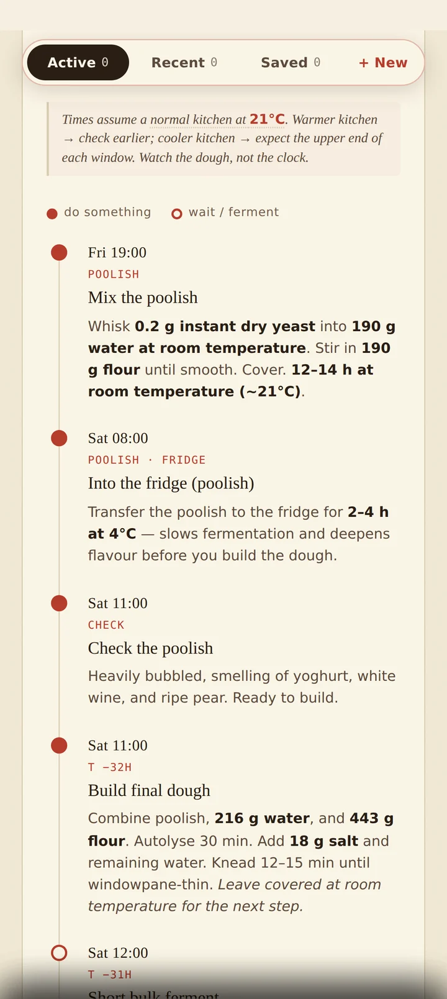
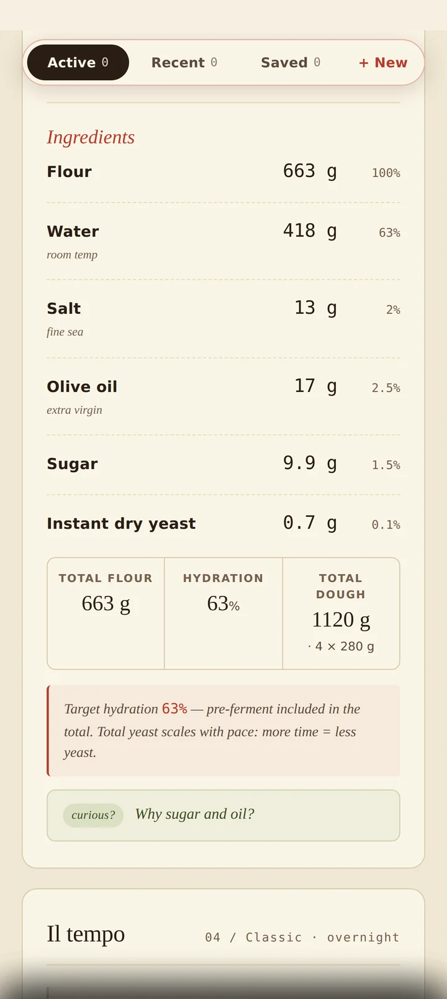
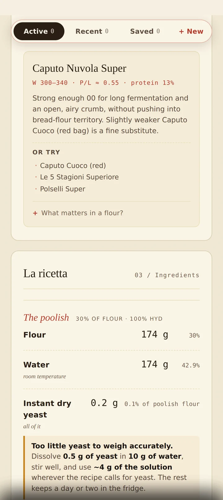
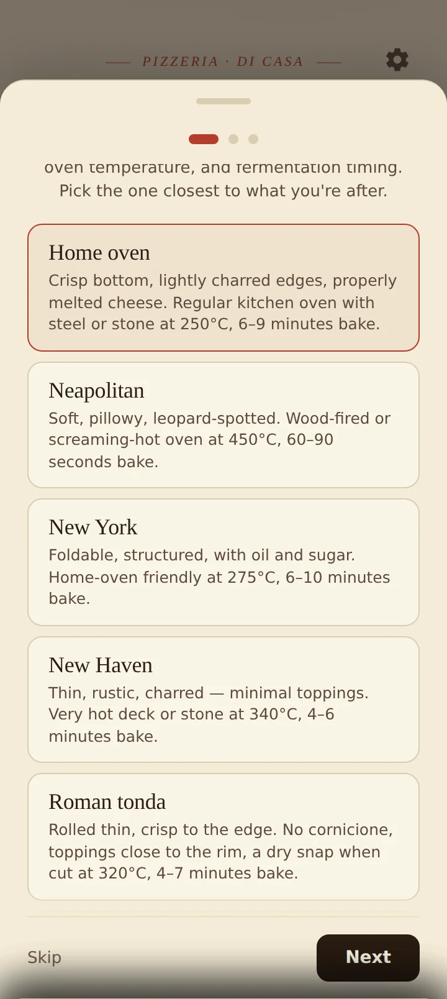
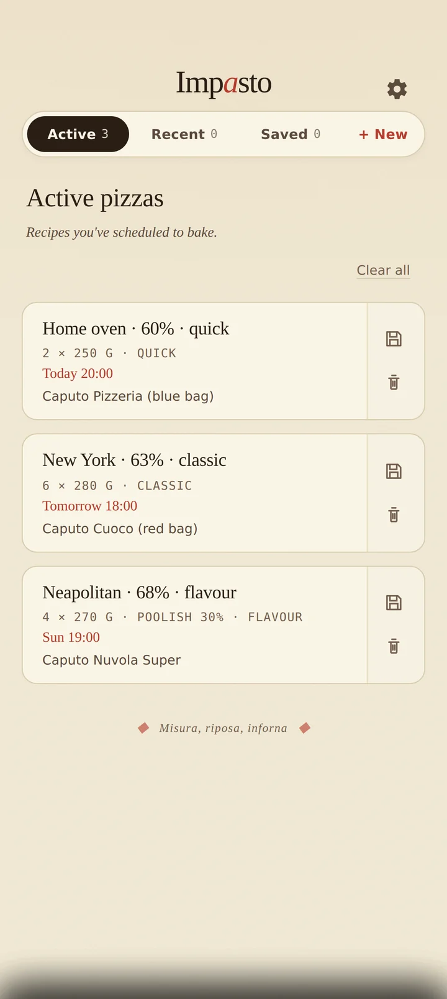

Tell Impasto when you want to eat. It works backwards from there — calculating every mix, fold, rest and proof so the dough is ready exactly when you are. No guesswork, no 3 a.m. alarms.

Most dough calculators hand you a list of grams and leave you to figure out the timing. Impasto starts with your schedule and builds the recipe around it.
Choose the day and hour you want to pull pizza from the oven. That single choice anchors everything else.
Style, pace, hydration, number of pizzas, ball weight. Impasto recalculates the recipe to the gram, instantly.
Every step shows the real clock time it happens. Optional reminders tap you on the shoulder when it's time to act.
No more "rest for 4 hours" and mental arithmetic. Impasto shows "Fri 14:00", not "after 4 hours." Filled dots are the moments you do something; hollow dots are the long waits while the dough does the work.

Flour, water, salt, oil, sugar and yeast — all calculated to the gram and shown as baker's percentages. Change the number of pizzas or the ball weight and everything recalculates on the spot.

Impasto matches the strength your recipe actually needs to flours you can buy — by W-value, P/L ratio and protein — then names specific bags and blends.
Great dough should finish mixing at the right temperature: too warm and it races ahead, too cold and it stalls. Impasto back-calculates the exact water temperature to hit that target, reading your kitchen's warmth and the way you mix — then drops the number straight into the mix step.
This is what Impasto builds for you — read top to bottom, act on the filled dots, relax on the hollow ones.
Each style carries its own dough behaviour, hydration range and oven profile — whether you've got a pizza oven or a regular kitchen one.
Crisp bottom, lightly charred edges, properly melted cheese — built for a steel or stone in a normal oven.
Soft, pillowy, leopard-spotted. For a screaming-hot wood-fired or pizza oven.
Foldable and structured, with oil and sugar in the dough. Home-oven friendly.
Thin, rustic, charred — minimal toppings, maximum crust character.
Log how each bake turned out with a star rating, tasting notes and photos of your crust and crumb.
Plan several bakes at once, keep your history, and re-bake a favourite any time with a fresh schedule.
No account, no sign-up, no internet. Your kitchen doesn't need Wi-Fi to make great pizza.
Everything is stored on your device. Export a full backup whenever you like, and restore it just as easily.
Send a clean, readable recipe — ingredients, schedule and preferment notes — straight to a friend.
English, Italian, Spanish, German, French, Dutch, Portuguese (BR & PT), Romanian, Polish and Turkish.
From first setup to a late-night bake — every screen stays calm, legible and out of your way.


Impasto is free, ad-free, and built by people who care about good dough. Every feature is yours, free, forever.